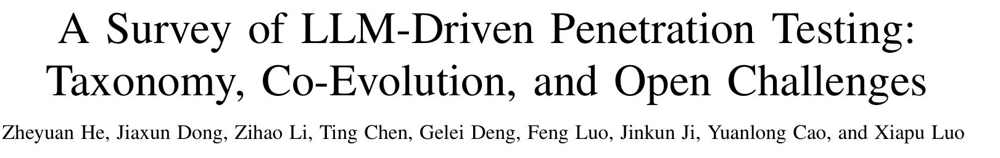
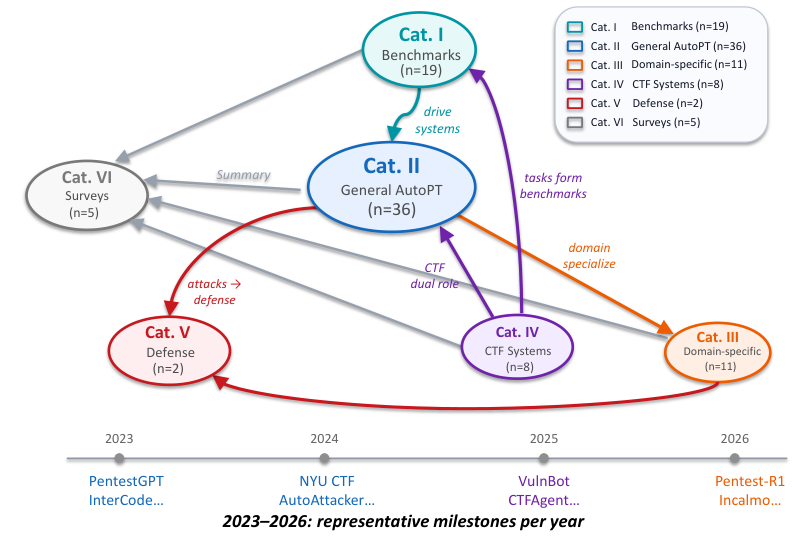
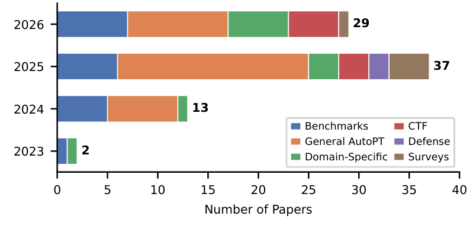
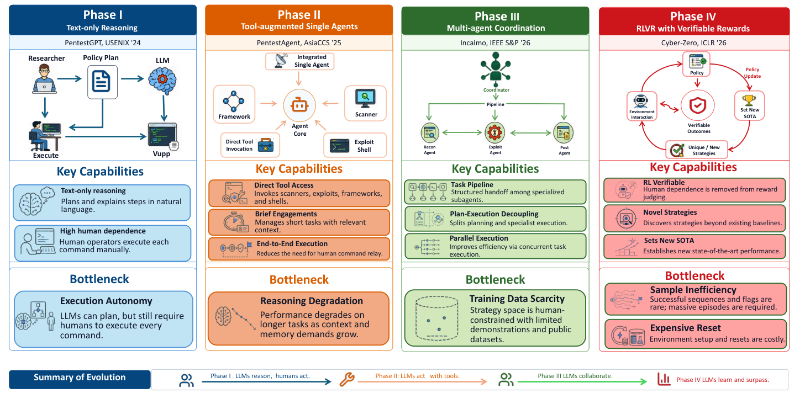
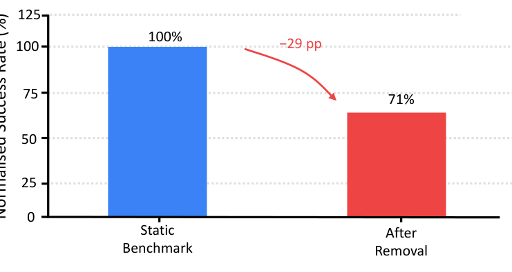
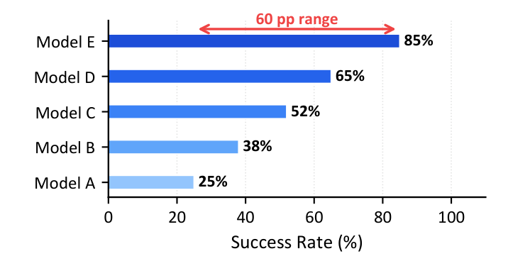

本文看点
01
81篇论文四阶段演化线
02
攻击能力被瓶颈逐级驱动
03
现有成功率数字大多不可信
01
PAPER INFO
论文信息
【论文题目】A Survey of LLM-Driven Penetration Testing: Taxonomy, Co-Evolution, and Open Challenges
【论文链接】https://arxiv.org/abs/2607.02605

— 论文题头
本文由电子科技大学、香港理工大学、南洋理工大学等团队完成。这是我们 Agent 安全系列里第一篇聚焦"进攻侧"的综述：不是研究怎么防 Agent，而是系统梳理"用 LLM 造一个能自主渗透测试的攻击型 Agent"这个方向。因为是综述，本文写得更深入一些。
02
OVERVIEW
导读
让 AI 自主做渗透测试（论文把这类系统统称 Agent4Pentest）正在成为安全研究的爆发点：从侦察、漏洞扫描、利用、横向移动到写报告，本来每一步都需要专家经验，而 LLM Agent 有希望把这条又贵又依赖人的链路自动化。但这个领域长得太快太乱，一直缺一张统一的地图。这篇综述系统梳理了 2023 到 2026 年的 81 篇论文，做了三件事：把它们归成六个类别、勾勒出一条清晰的四阶段架构演化线、并诚实地指出整个领域最尴尬的问题：现在这些论文报出来的漂亮成功率，大多经不起推敲。
03
LANDSCAPE
全景：六类与一条协同演化线
作者先把 81 篇论文归成六类：评估基准（19 篇）、通用型自主渗透系统（36 篇，最大类）、领域专用框架（11 篇）、CTF 系统（8 篇）、防御应用（2 篇）、综述（5 篇）。更有意思的是这六类之间的依赖关系，如下图：

— 图1：81 篇论文的六类研究版图与依赖关系。CTF 系统（紫）为评估基准（青）提供任务、也当强化学习训练场；基准驱动通用系统（蓝）发展；通用系统进一步催生领域专用框架（橙）；日渐强大的进攻能力开始催生防御研究（红）。底部是逐年代表性里程碑
从数量增长就能看出这个方向有多热：2023 年只有 2 篇，2024 年 13 篇，2025 年直接飙到 37 篇，2026 上半年已有 29 篇。

— 图2：论文数量按年份和类别分布。通用型自主渗透系统（橙）始终是主力，评估基准（蓝）紧随其后
04
EVOLUTION
核心：一条被瓶颈逐级驱动的四阶段演化线
这篇综述最有价值的贡献，是从 81 篇论文里提炼出一条清晰的架构演化线。它的洞察是：
Agent4Pentest 的每一次架构升级，都不是随意的，而是被上一代无法跨越的能力瓶颈逼出来的。每个阶段都解决了前一代的死结，同时暴露出一个新的死结，推动下一次进化。
这条演化线分四个阶段，如下图：

— 图3：Agent4Pentest 的四阶段架构演化。每一阶段都标出了它的核心能力和把它卡死、逼出下一代的瓶颈
第一阶段：纯文本推理（2023）。 以 PentestGPT 为代表，证明了 LLM 能在渗透测试的多个阶段维持连贯的攻击策略。但它只会"说"不会"做"：每一条命令都得人类操作员手动敲进终端、再把结果贴回给模型。瓶颈就是执行自主性：它能规划，但离不开人。
第二阶段：工具增强的单智能体（2023-2024）。 给 LLM 直接接上扫描器、漏洞利用框架和 shell，去掉了人肉中转，Agent 能自己动手了。但新瓶颈冒出来：上下文管理。engagement 一长，无关的工具输出堆满上下文窗口，推理开始退化，长任务越做越糊涂。
第三阶段：多智能体协作（2024-2025）。 把整条攻击链拆给多个专职 Agent（规划者、侦察 Agent、利用 Agent、后渗透 Agent），由协调者编排。分散上下文缓解了退化，还能并行加速。但更深的瓶颈浮现：训练数据稀缺。这些 Agent 的策略空间还是被人类演示的范围框死，学不到人类测试员想不到的打法。
第四阶段：可验证奖励的强化学习 RLVR（2025-2026）。 最新一代（如 Pentest-R1、Cyber-Zero）不再依赖人类演示，而是用"能不能拿到 flag、能不能拿到 root 权限"这种可验证的结果当奖励信号去训练。这标志着能力获取方式的根本转变：从模仿人类，变成奖励驱动的自我进化，Agent 开始能发现人类演示语料里根本没有的新攻击策略。但它也有自己的瓶颈：样本效率：成功的攻击序列在真实环境里太稀有，训练要烧掉海量 episode，而且每跑一次都要重置环境，成本极高。
一个值得单独点出的副产品：CTF 平台在这条线里扮演了双重角色，既是评估 Agent 的考场，又是 RLVR 训练的练兵场。这个耦合加速了进步，却也埋下了下面要讲的评估可靠性隐患。
05
RELIABILITY
尴尬真相：现在的成功率数字大多不可信
如果说四阶段演化是这篇综述的"骨架"，那对评估可靠性的拷问就是它的"良心"。作者用数据摆出了两个让人后背发凉的事实。
其一，数据污染。 很多亮眼的 CTF 成绩，可能只是模型在训练时"背过答案"。有研究把同一个 Agent 放到静态基准和实时竞赛里对比，去掉 71 个"记忆事件"后，平均成功率直接掉了 29 个百分点。也就是说，静态基准上的高分里有相当一部分是记忆、不是推理。

— 图4：数据污染的影响。去掉 71 个记忆事件后，同一 Agent 的成功率从 100% 掉到 71%，蒸发了 29 个百分点
其二，单次运行根本不可靠。 有研究把同一个攻击场景对每个模型重复跑 100 次，结果成功率在 25% 到 85% 之间横跳，波动范围高达 60 个百分点。这意味着，一篇论文里"我的 Agent 成功率 70%"这种单次结果，几乎没有可比性，换个随机种子可能就变成 30%。

— 图5：评估方差。同一场景重复 100 次，五个模型的成功率散布在 25% 到 85% 之间，单次评估完全不可靠
这两个问题加上第三个"CTF 与真实渗透的结构性失配"（CTF 靶标是预先隔离、已知有漏洞、无防御的，而真实攻击要在一堆正常主机里找到脆弱点、串起利用链、还要对抗动态防御），共同解释了为什么现有评估会系统性高估 Agent 的真实能力。论文里那些冷冰冰的数字很说明问题：给了 CVE 描述时 GPT-4 利用成功率 87%，不给描述只有 7%（说明发现漏洞比利用漏洞难得多）；真实 Web CVE 基准上最强 Agent 只利用了 12.5%；端到端"从发现到修补"的完整链成功率低于 10%；WAF 绕过任务上所有 Agent 得零分。
06
CHALLENGES
四个结构性纠缠的开放挑战
作者最后指出四个悬而未决的挑战，关键是它们彼此纠缠、无法各个击破：评估不可靠 → 就没法判断复杂攻击链的真实难度；训练数据稀缺 → 限制了 Agent 能学到的打法；缺乏鲁棒的安全机制 → 挡住了真实部署，反过来又断了获取真实数据的路；再加上研究原型几乎从不和商业渗透产品（Pentera、NodeZero 等）同台比较，导致这个领域说不清自己到底追平商业水平没有。三者环环相扣，任一进展都依赖另外两个先松动。
07
TAKEAWAYS
启发与点评
对研究者：这篇综述给"用 LLM 做进攻"这个方向立了一套可复用的坐标系，那条"被瓶颈逐级驱动"的四阶段演化线尤其值得记住：它不只是罗列时间线，而是讲清了每一代架构为什么必须出现，这种"以瓶颈为线索"的叙事，对判断下一步该往哪走很有指导性（现在卡在样本效率和评估可靠性上，谁能松动这两个死结，谁就定义第五阶段）。而它对评估可靠性的量化拷问（29 个点的污染、60 个点的方差）更是给整个领域敲了警钟：在这个方向上，一个不加多次运行、不排除数据污染的成功率数字，基本没有参考价值。想进这个方向的人，第一件事应该是建可信的评估，而不是又刷一个高分。
对从业者：两个判断。其一，别被论文里的高成功率唬住。这篇用数据说明，那些数字大多在受污染的静态靶场上、单次跑出来的，真实企业环境里"从一堆正常主机里发现并串起漏洞链"的能力，前沿 Agent 的完整链成功率还不到 10%。现阶段把自主渗透 Agent 当"能替代人类红队"来用，风险很大。其二，攻防是同源的：论文里"漏洞发现比利用难得多"这个结论对防守方是好消息：只要把攻击面收敛、别让已知漏洞裸奔，自动化攻击 Agent 的门槛其实比想象中高，因为它们最弱的恰恰是发现新漏洞这一环。
一点观察：把这篇放进我们整个 Agent 安全系列看，它正好是三支柱综述里"应用-红队"那一块的深度展开。那篇综述提出"攻击型 Agent 88% 全自主、成本压到人类的九分之一"，而这篇则冷静补了下半句：自主性和便宜是真的，但"能力"很可能被污染的评估严重夸大了。这提醒我们看待"AI 自动化攻击"时要两面都拿捏：它进化很快、方向明确（四阶段一路奔向自我进化），但离"稳定可靠地攻破真实系统"还有实打实的距离。对做软件供应链安全的人来说，这个距离就是我们收敛攻击面、补齐已知漏洞的窗口期。